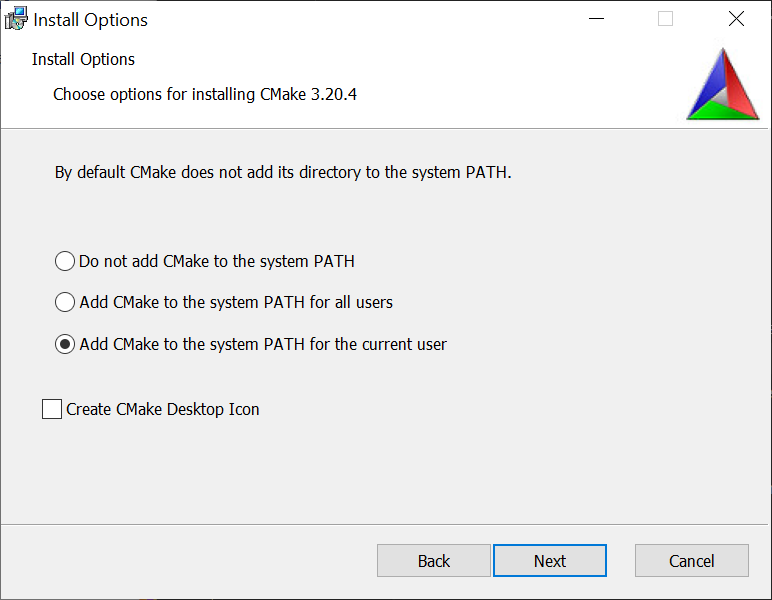
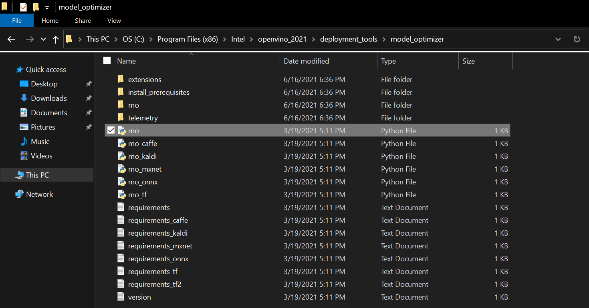
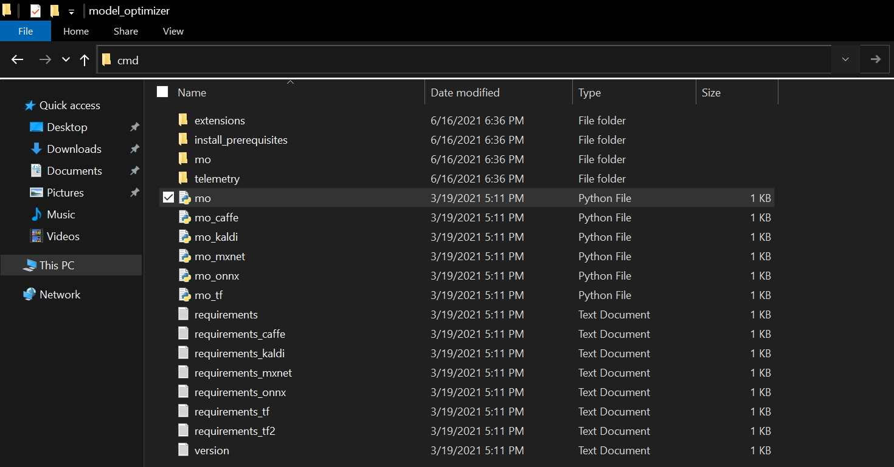

OpenVINO Plugin for Unity Tutorial Pt.1
Overview
In this tutorial series, we will cover how to create a plugin that leverages the OpenVINO™ Toolkit for the Unity game engine. We will first create a Dynamic link library (DLL) in Visual Studio to perform inference with a pretrained deep learning model. We will then demonstrate how to access this DLL inside a Unity application.
We will be using a computationally demanding style transfer model to demonstrate the potential performance benefits from using the OpenVINO inference engine. The model takes in a single RGB image as input and has been trained to generate a stylized version of the image based on a specific style image. The steps for training this type of model are covered in an earlier tutorial.
In this first part, we will ensure the prerequisite software is installed on our system and convert a pretrained model from ONNX format to the OpenVINO Intermediate Representation format.
Prerequisites
The following prerequisites are required to complete this tutorial.
Experience
This tutorial does not assume any prior experience with the OpenVINO™ Toolkit or Unity. However, some basic experience with Unity would be beneficial.
System Requirements
The target platform for this project is Windows 10 64-bit. The OpenVINO™ Toolkit does not appear to support 32-bit versions. Given that the OpenVINO™ Toolkit is designed for Intel hardware, an Intel CPU and/or GPU is highly recommended.
Unity
The first prerequisite we will want to set up is Unity. If you don’t already have Unity installed, you can download Unity Hub from the link below.
- Unity Hub: (download)
Once Unity Hub is set up, you can install Unity 2020.3.12f1 (LTS) from the link below.
Note: The installation process will also install Visual Studio, one of the other prerequisites.
If you have never used Unity before, you can become acquainted with the basics by following the tutorial below. It will walk you through the installation process all the way to making an Angry Birds clone.
Visual Studio
Visual Studio will be installed during the installation process for Unity. However it can also be downloaded directly from the link below.
- Visual Studio Community 2019: (download)
Visual C++ Redistributables
The Visual C++ Redistributables should be installed along with Visual Studio. However, you can also download them from the link below.
- Latest C++ Redistributables: (link)
CMake
CMake is listed as a requirement for the OpenVINO™ Toolkit. However, it will not be needed for this tutorial. The download link for the latest release of CMake 64-bit is still provided below.
- CMake: link
Note: Make sure to select one of the Add CMake to the system PATH options during the installation process.

Python
We will need Python 3.6, 3.7, or 3.8 64-bit to convert the provided model from ONNX format to OpenVINO’s intermediate representation. We can install Python 3.8 from the Windows Store. This method automatically sets up the Python installation to be accessible from the command line.
- Windows Store Python 3.8: (link)
OpenVINO
We now have all the required prerequisites to install OpenVINO. We’ll be using OpenVINO 2021.3 for this tutorial. You will need to fill out a registration form to download the toolkit.
Convert ONNX Model to OpenVINO IR
Before we write any code, we need to convert the trained model to OpenVINO’s Intermediate Representation format. We will use the style transfer model from this tutorial series as an example.
Open the File Explorer and Navigate to C:\Program Files (x86)\Intel\openvino_2021\deployment_tools\model_optimizer

Type cmd into the address bar and press Enter to open a command line prompt.

The mo.py script requires a few additional python packages. You can install them via pip with the following commands.
NumPy:
pip install numpydefusedxml:
pip install defusedxmlNetworkX:
pip install networkxONNX:
pip install onnx
Once those are installed, we’ll run the mo.py script with the following parameters.
python mo.py --input_model <path-to-ONNX-model> --model_name <openvino-model-name> --output_dir <path-to-save-openvino-model> --data_type FP16
Note: FP16 or half precision is recommended for GPU inference. It reduces the size of the model and can increase inference speed.
Here is an example where User_Name would be replaced with the current Windows username.
python mo.py --input_model C:\Users\User_Name\Downloads\final.onnx --model_name mesh-shader_fp16 --output_dir C:\Users\User_Name\Downloads\ --data_type FP16
We can also specify the input resolution with the --input_shape [N,C,H,W] parameter. For example, we could specify an input resolution of 960 x 540 with --input_shape [1,3,540,960]. However, this is not required as we will be updating the input resolution from the Unity application at runtime.
The script will generate three files:
We will need the .bin and .xml files. The .xml file describes the network topology, including the layer operations and flow of data through the network. Here is a snippet from the top of the generated .xml file.
<?xml version="1.0" ?>
<net name="mesh-shader_fp16" version="10">
<layers>
<layer id="0" name="input.1" type="Parameter" version="opset1">
<data shape="1,3,960,540" element_type="f16"/>
<output>
<port id="0" precision="FP16" names="input.1">
<dim>1</dim>
<dim>3</dim>
<dim>960</dim>
<dim>540</dim>
</port>
</output>
</layer>
<layer id="1" name="Pad_0/Cast_111275_const" type="Const" version="opset1">
<data offset="0" size="32" shape="4" element_type="i64"/>
<output>
<port id="0" precision="I64">
<dim>4</dim>
</port>
</output>
</layer>The .bin file stores the constant values for the model learned during the training process.
Conclusion
That takes care of the required setup. In the next part, we will cover how to create a Dynamic link library (DLL) in Visual Studio to perform inference with the OpenVINO IR model.
Project Resources:
Next: Part 2
I’m Christian Mills, an Applied AI Consultant and Educator.
Whether I’m writing an in-depth tutorial or sharing detailed notes, my goal is the same: to bring clarity to complex topics and find practical, valuable insights.
If you need a strategic partner who brings this level of depth and systematic thinking to your AI project, I’m here to help. Let’s talk about de-risking your roadmap and building a real-world solution.
Start the conversation with my Quick AI Project Assessment or learn more about my approach.